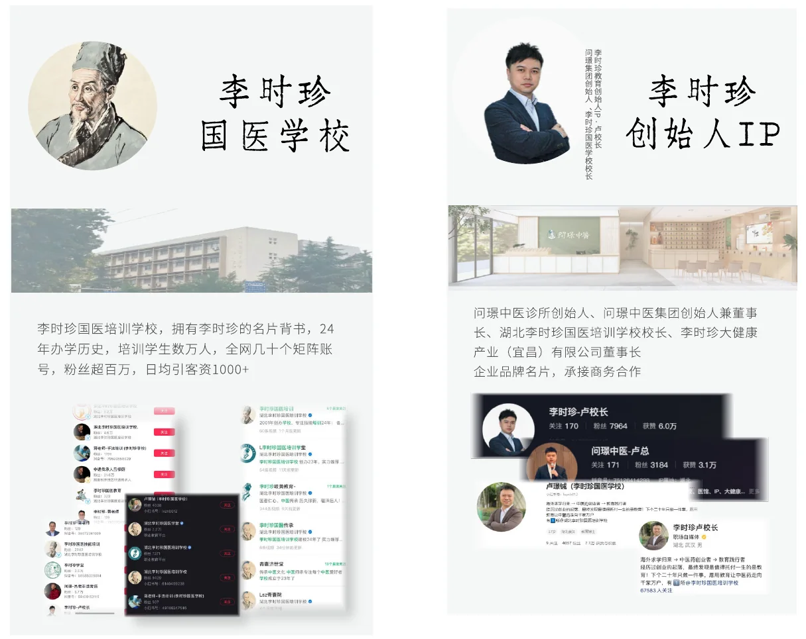
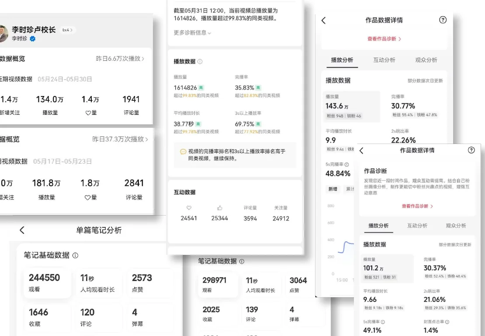

人物与专业内容
负责创始人 IP 内容打造，围绕人物经历、专业观点和学校业务组织选题与账号表达。
中医教育与大健康
把中医教育里的专业知识、人物经历和课程信息，转成用户能理解的内容。
项目是什么
学校、专家和课程都有丰富内容，但用户先要弄清楚“这个人是谁、课程与我有什么关系”。我从创始人 IP 内容入手，把人物经历、专业观点和课程信息组织成适合账号传播的表达。
我的工作
负责创始人 IP 内容打造，围绕人物经历、专业观点和学校业务组织选题与账号表达。
把课程信息放进用户能够理解的内容中，让账号传播继续连接咨询与课程沟通。
后期担任总经理助理，协助整理 IP 商务合作方案，并参与品牌故事、品牌手册、品牌形象和公众号等对外表达。
项目结果
以上是项目阶段数据；我的工作是前期创始人 IP 内容打造，以及后期的商务方案和品牌表达。
项目画面

